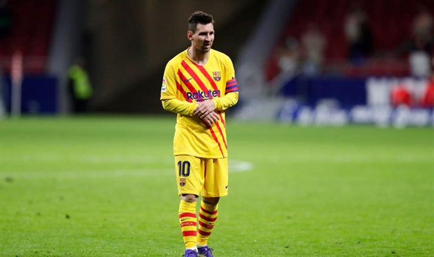

Манчестер Сити отказался от попыток заполучить Месси
Причина — возраст и зарплата Лионеля Месси.

Лионель Месси больше не является трансферной целью Манчестер Сити — сообщает Sky Sports.
Руководство Манчестер Сити решило, что этот переход несет в себе слишком большие сложности, но главной проблемой является
слишком высокая зарплата 33-летнего футболиста.
Манчестер Сити был главным претендентом на аргентинца, когда он собирался покинуть Барселону летом 2020 года,
и даже после его решения остаться на Камп Ноу "горожан" называли в числе клубов, куда он мог бы перейти в январе 2021 года.
Нынешний контракт Месси с Барселоной истекает летом 2021 года, после чего Лео станет свободным агентом.